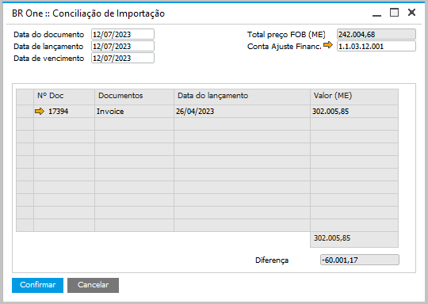
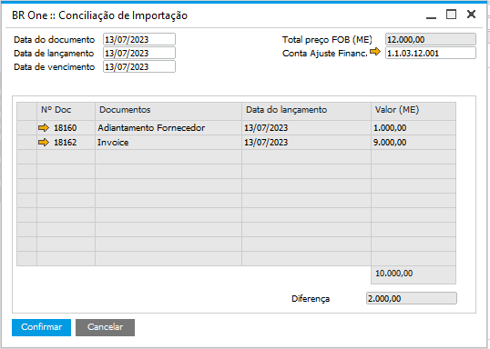

Conciliação de importação
O processo de conciliação de importação irá tratar todos os processos realizados na conta transitória de conciliação financeira, listando os documentos de adiantamentos ao fornecedor e Invoice. Esta funcionalidade só poderá ser feita uma única vez e após feita a apuração do saldo existente na conta de conciliação financeira, posteriormente é feito um LCM para corrigir a diferença (se houver) e um LCM para retirar o saldo da Conta de conciliação financeira, usando em contrapartida a Conta transitória de estoque.
Ao clicar em Conciliação de importação a tela abaixo será aberta:
{kind=link}
Em seu cabeçalho são mostradas as datas do documento, lançamento e vencimento, o campo de Total preço FOB (ME) que retorna o valor do campo já existente do processo e a conta de ajuste financeiro, na qual retorna a conta Adiantamentos do Fornecedor do processo.
Abaixo são listados os documentos de Adiantamento ao fornecedor (se houver) e Invoice, com o número do documento, data de lançamento e o valor (ME). No rodapé é exibido o total dos valores no campo Total valor (ME) e o campo de diferença, no qual é feito o cálculo da diferença entre o Total preço FOB do cabeçalho e do campo Total valor.
Ao clicar em Confirmar, a mensagem seguinte é exibida:

BR One :: Será feita a apuração da conta contábil de conciliação e LCM de conciliação contábil. Deseja continuar?
Após confirmar, é feito o LCM de conciliação financeira, caso aponte alguma diferença, e será feito um LCM de conciliação contábil para retirar o saldo da conta transitória de conciliação financeira do processo. O status de sucesso aparecerá do log de mensagens do SAP:
{kind=link}
BR One :: LCM de conciliação contábil adicionado com sucesso
Caso ocorra algum erro, a apuração e o LCM serão feitos pelo botão Gerar LCM contábil nos detalhes do botão […] de conciliação financeira.
Ao clicar nos […] é possível verificar os detalhes dos LCMs gerados:

LCMs de conciliação financeira e conciliação contábil
Para demonstrar o processo, temos como exemplo a apuração do saldo que existe na conta de conciliação financeira:

Débito de US$ 1.000,00 (R$ 6.000,00) devido ao adiantamento ao fornecedor.
Débito: US$ 9.000,00 (R$ 54.000,00) devido ao pagamento da Invoice.
Saldo: US$ 10.000,00 (R$ 60.000,00).
Ao clicar em Conciliação de Importação é feita a apuração deste saldo acima e calculado a diferença com o valor do total FOB, no exemplo abaixo houve uma diferença de US$ 2.000,00.
{kind=link}
Após isto, é feito um LCM para correção desta diferença, gerando as obrigações financeiras para a empresa ou para o Fornecedor.

Caso o campo de diferença aponte um saldo positivo:
Será feito um débito na conta de adiantamentos do fornecedor; e
Será feito um crédito na conta de conciliação financeira das configurações de importação.
Caso o campo de diferença aponte um saldo negativo:
Será feito um débito na conciliação financeira das configurações de importação; e
Será feito um crédito na conta de adiantamentos do fornecedor.
Este LCM de conciliação financeira só é feito se houver diferenças entre os campos Total preço FOB e o Total valor da tela de conciliação financeira.
No entanto o LCM conciliação contábil sempre será feito e tem como objetivo realizar a retirada do saldo da conta transitória financeira do processo. Este processo visa tratar a conciliação financeira do fornecedor, sendo possível encontrar as diferenças entre a quantidade de itens que foram comprados e que foram recebidos.

Possíveis ocorrências durante o processo
Não é possível gerar mais de uma conciliação financeira, exibindo a seguinte mensagem de erro:
{kind=link}
BR One :: O processo de Conciliação de importação só pode ser realizado uma vez